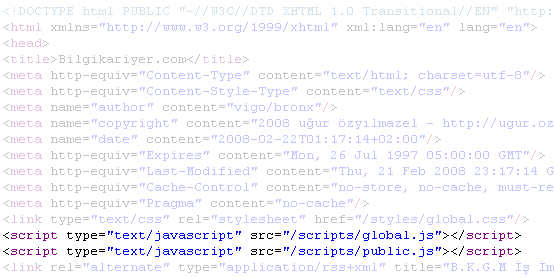
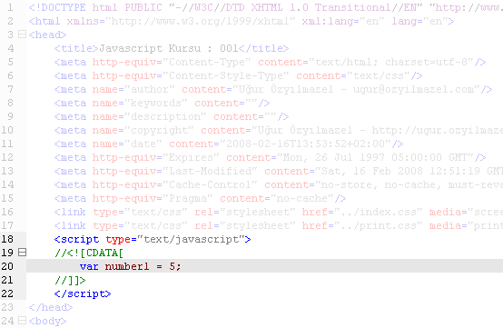
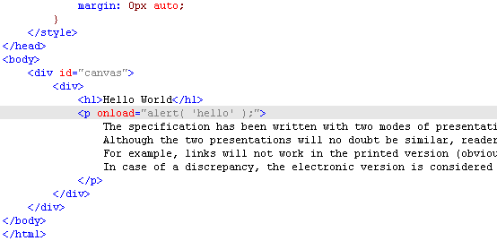
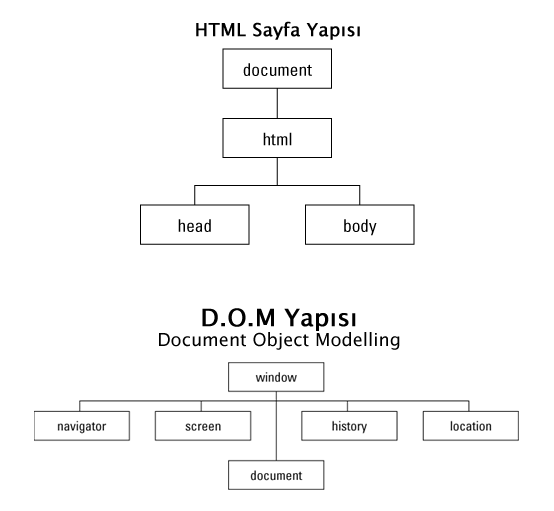
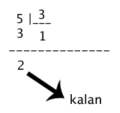

Javascrit’in temel özellikleri :
Web için kullanıldığında Client-Side yani istemci-tarafı’nda çalışan, html ile birlikte istemcinin makinesine inen ( browser javascript dosyalarını download eder ve yorumlar ) ve render edilmiş html’i kontrol etmeye yarıyan bir sistemdir.
Tavsiye edilen kullanım, html’de <head>’in içerisinde, CSS gibi include edilmesi, sayfa yüklendikten sonra ( body’nin onload event’i ) tetiklenmesidir.
Tüm bilgisayar dillerinde olduğu gibi, komutlar’dan ve değişkenlerden oluşan bir yapı bulunur. Değişkenlerin tipleri vardır. Bunlar :
İşlem yapabilmek için elimizdeki bilgiyi atadağımız şey’e değişken deriz. Adından da anlaşılacağı gibi bu şey, daha sonra işlem yaparak, içinde bulunan değerin değiştirilmesine izin verir. Bu bakımdan da adı değişebilen anlamına gelen Değişken yani Variable’dır.
Kuralına uygun kod yazmak için, kod içinde kullanıcağımız değişkenleri deklare etmemiz ( tanımlamamız ) gerekir. Bunun için var anahtar kelimesini kullanırız.
Bir yazılım dilini öğrenmenin en kolay yolu, önce ekrana birşeyler yazdırmaktan geçer. B.A.S.I.C dilindeki print komutunu hatırlayalım. Bu işi Html/Javascript dünyasında yapmak için Browser’ın bazı özel komutlarını kullanmamız gerekiyor;

Javascript’in <head> içinde include edilmesi

Javascript’in <head> içinde embed edilmesi

Javascript’in in-line yazılması
Bundan sonra pek çok kez bu kelimeyi göreceğiz. DOM hayatımızın bir parçası olacak!!!. Html / Css derslerinde, Html sayfasının ana yapısından bahsetmiştik. <head> ve <body>’nin önemini görmüştük.
Bezer yapı DOM’da da var. En dışta window bulunuyor. Bu aslında kodun çalıştığı pencere. Yani browser’ın ta kendisi. DOM’la ilgili çok detaylı konularımız olacak. Şuan için kabaca ne olduğuna dair bir ipucu veriyorum. Keza asıl amacımız ekrana birşeyler yazdırmak. Bu bakımdan, DOM’un çok küçük bir parçası ile ilgiliyiz şuanda.
En basit haliyle ekrana birşey yazdırmak için bunu kullanırız. Bu aslında adın da anlaşılacağı gibi, bir uyarı mesajı yani alert’dir. Çalıştıktan sonra sizden geri cevap bekler. Bu cevap işide “OK” düğmesine tıklanarak yapılır.
Elimizdeki değişkenin / nesnenin tipini anlamımızı sağlar. Bize tip bilgisi döner. String , Number , Object gibi...

HTML ve D.O.M Yapısı
Browser yardımı ile kullanıcıdan text bilgi girişi ( text input ) almak için kullanılır. Eğer kullanıcı herhangi bir şey girmiş ise ( sayı yada text ) geriye girilmiş olan değer string olarak döner. Eğer “Cancel” düğmesine basılırsa yada “ESC” tuşuna basılırsa false döner!
objectVariable = window.prompt( [stringMessage] [, stringDefaultValue] );
Doğrulamak / oynaylamak anlamındadır. Browser, kullanıcıya “OK” / “CANCEL” sorusunu sorar. OK’e tıklandığında bu TRUE, CANCEL’a tıklandığında da bu FALSE anlamındadır.
booleanConfirmed = window.confirm( [stringMessage] )
+ , - , * , / işaretleri ile aritmetik işlemleri yaparız. Parantezli işlem yaparken sırasıyla, Çarpma ( * ) , Bölme ( / ) , Toplama ( + ) ve Çıkartma ( - ) şeklindedir. Matematik işlemlerinin yapılabilmesi için numeric değerlerle ( integer / float gibi ) işlem yapmak gerekir. Sayısal bir değerle yazısal ( string ) bir değeri topladığınızda sonuç string olur! İşlemleri parantezlerle gruplarsanız önce parantez içindeki ifade işlenir, daha sonra işlem üstünlüğüne göre sıradaki işlem yapılır.
is Not a Number yani “Eğer sayı değilse” anlamındadır. Eğer string ise TRUE döner. Eğer girilen şeyin sayı olmasını istersek, isNaN bize FALSE dönmelidir.
İşimizi garantiye almak için, sadece numerik değerlerle çalıştığımıza emin olmak için bu fonksiyonu kullanırız. İleriki derslerde prototype konusuna geldiğimizde, string objesine isNumber diye bir metod ekleyip bu işi daha kolay yapacağız.
Keza, herzaman typeof’u kullanarak, elimizdeki şeyin cinsini öğrenebiliriz.
Arttırma ( ++ ) , azalttırma ( -- ) , Mod ( % )
+= , *= , /= , -= aynı mantıkta işler.

mod kalanı verir bize. Örneğin 5’i 3’e böldüğümüzde 1 sonuç, 2 ise kalandır.
Kullanıcı bir sayı girsin, sayı eğer 5’in katı ise ekranda bir mesaj çıkartalım! Bunun için modulo ( yani mod ) kullanırız.